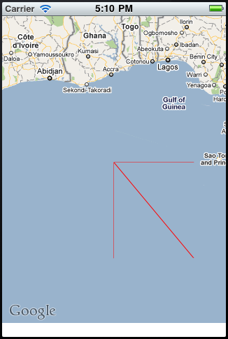

I was toying around with MapKit today and I am pretty sure I found a bug. MapKit renders an extra line along the equator if a polyline's point has a latitude of zero or an extra line along the prime meridian if its longitude is zero AND if the line width is less than or equal to 1.0. The code snippet to reproduce the issue can be found here:
- (void)viewWillAppear:(BOOL)animated { [super viewWillAppear:animated]; CLLocationCoordinate2D points[2]; points[0].latitude = 0; points[0].longitude = 0; points[1].latitude = -6; points[1].longitude = 5; MKPolyline* polyline = [MKPolyline polylineWithCoordinates:points count:2]; [mapView addOverlay:polyline]; [mapView setRegion:MKCoordinateRegionMake(CLLocationCoordinate2DMake(0, 0), MKCoordinateSpanMake(10, 10))]; } - (MKOverlayView*)mapView:(MKMapView *)mapView viewForOverlay:(id <MKOverlay>)overlay { MKPolylineView* polylineView = [[MKPolylineView alloc] initWithPolyline:overlay]; polylineView.lineWidth = 1; polylineView.strokeColor = [UIColor redColor]; return [polylineView autorelease]; }
And also a screenshot of the result:

For the iTunes U course on iOS programming I followed along with the homework assignments. The last assignment was a Flickr app that shows photos at popular geotagged locations. I had an issue with UITableViewCell reuse and background threads populating the thumbnail image that I thought was worth sharing. On iOS in order to improve performance some of the different libraries like UIKit and MapKit have the ability to reuse UI elements once they are no longer on screen. When reuse occurs it is up to the developer to provide new data for the UI element. My problem was that two or more asynchronous operations could change the same table cell. One solution would be to stop reusing table cells but that is not ideal. As long as I can identify which image should be shown in the cell at a given time I can make sure the correct asynchronous operation updates the cell. Since UITableViewCell derives from UIView it has the tag property which is a NSInteger. The UITableView represents an array of data from Flickr. Before making the asynchronous call I set the cell’s tag to the index in that array it currently represents. Then in the callback function I only update the cell if its tag matches the index for which the asynchronous call was made. Without this change in place it is possible to scroll through the list rapidly and see the thumbnail change two or three times for a cell while the remaining thumbnail downloads finish. But the last update could be the wrong thumbnail. The code itself is simple and can be found here:
- (UITableViewCell *)tableView:(UITableView *)tableView cellForRowAtIndexPath:(NSIndexPath *)indexPath { static NSString *CellIdentifier = @"Cell"; UITableViewCell *cell = [tableView dequeueReusableCellWithIdentifier:CellIdentifier]; if (cell == nil) { cell = [[[UITableViewCell alloc] initWithStyle:UITableViewCellStyleSubtitle reuseIdentifier:CellIdentifier] autorelease]; } NSDictionary* pictObj = [self.pictures objectAtIndex:indexPath.row]; NSString* title = [pictObj objectForKey:@"title"]; title = [title length] == 0 ? @"(no title)" : title; cell.textLabel.text = title; cell.detailTextLabel.text = [[pictObj objectForKey:@"description"] objectForKey:@"_content"]; cell.accessoryType = UITableViewCellAccessoryDisclosureIndicator; //identify which image the cell should be displaying right now cell.tag = indexPath.row; Photo* photo = [Photo photoWithFlickrData:pictObj inManagedObjectContext:context]; if (photo.thumbnail) { cell.imageView.image = [UIImage imageWithData:photo.thumbnail]; } else { cell.imageView.image = nil; [photo thumbnailWithBlock:^(UIImage* image) { //check to make sure the image should be updated if (cell.tag == indexPath.row) { cell.imageView.image = image; [self.tableView reloadRowsAtIndexPaths:[NSArray arrayWithObject:indexPath] withRowAnimation:UITableViewRowAnimationNone]; } }]; } return cell; }
I have been working my way through the Stanford iOS programming course. It’s been my biggest exposure to the Apple developer ecosystem. So far I have encountered three user interface components in the tooling that I trip me up. The first is Interface Builder (IB). This tool is separate from the XCode IDE. I typically forget to save changes. In my mind XCode and IB are one and so I expect my changes to be saved when I build. I usually end up with a blank screen and then I remember: save in IB! In XCode 4 IB is supposed to be integrated so hopefully this issue is fixed. On the code side of things all the UI pointers are nil. In Objective C it is perfectly valid to send messages to those nil objects. Personally, I would like to fail fast and have the program crash as I think that would help me find the root cause quicker. Second, when opening older projects I often get the “Base SDK is missing” error. It’s easy to change in the project’s build settings but after the change it seems you must reload the project in XCode. It wasn’t entirely obvious at first but restarting an application usually fixes everything regardless of the platform. Finally, I wanted to see how my custom drawRect: code was visually different on the retina display versus the old display. I checked out an older device from work and took it too my office and tried to provision only to receive this error message:
Only one developer gets to register a device I figured. I searched the internet a bit and finally decided I would just provision the device as a tester’s device. While I was looking for the page to do that I found my device list had two devices listed. That was odd because I only expected to see my iPod listed. I looked at the second device and sure enough it had the same ID number as the device I had checked out. The dialog meant to add devices didn’t tell me it had done this. It only displayed an error message asking for another ID number. Overall the tooling is pretty good and it does not get in the way that often.